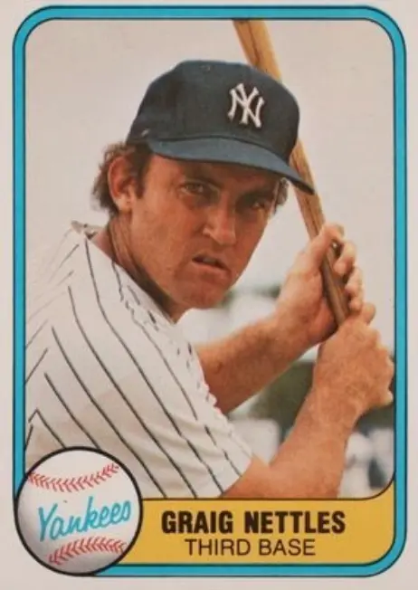

Graig Nettles "Puff"
Career Highlights & Facts
(Facts are AI-generated and may require verification)
- Possessed legendary defensive range at the hot corner, often compared to the greatest fielders in history.
- Recorded 5 assists in a single postseason game, including a spectacular play made from a kneeling position.
- Served as a team captain and was known for a sharp, self-deprecating wit in the clubhouse.
Would you like to find out more about Graig Nettles?
Player Biography
Graig Nettles January 4, 2012 / in BioProject - Person Home Run Champions 1970s All-Stars , 1980s All-Stars , 1990s All-Stars / by admin This article was written by Joseph Wancho He was blessed with cat-like reflexes, an accurate arm, and the ability to get his throws off quickly. His range at third base was as sweeping as a ten-foot leaf rake. He broke into the big leagues in Minnesota, honed his craft in Cleveland, and finally burst into stardom under the bright lights of New York City. On a team of all-stars, New York Yankees third baseman Graig Nettles seemed to be taken for granted. He was a solid contributor and did his job without much fanfare. Like many great defensive players, he wasn’t noticed until he wasn’t in the lineup. On October 13, 1978, the World Series moved to New York for Game Three. The Los Angeles Dodgers had taken a 2-0 lead over the Bombers. But the Yankees were sending their ace, Ron Guidry , winner of 25 games that season, to the hill. Guidry pitched a complete game and held the Dodgers to one run. But he struggled to get the victory, walking seven and giving up eight hits. He needed help from his fielders, and Nettles provided it. With the Yankees clinging to a 2-1 lead in the top of the third inning, the Dodgers’ Bill Russell was on first base with two out when Reggie Smith hit a smash down the third-base line. Nettles dived to his right, snagged the rocket, got to his feet, and threw Smith out at first base. In the fifth inning Smith came up with runners on first and second and two out. Again he hit a shot toward Nettles, who was only able to knock it down, holding Smith to a single and loading the bases. Steve Garvey was the next batter and smoked one to Nettles. Graig made the play from his knees, backhanding the ball, spinning and throwing to second for the force out. The Dodgers loaded the bases again in the sixth inning. Davey Lopes was the victim this time, as Nettles again made the play, throwing to second for a force out to end the inning. Nettles recorded five assists on that autumn night. Guidry was most appreciative of the effort. “I had to go with something else tonight. I picked on a man who is dependable,” he said. After the game Reggie Smith commented, “It’s Dodgers 2, Nettles 1. If we hadn’t been losing, I may have applauded myself.” Dodgers third-base coach Preston Gomez was equally complimentary of Nettles. “I said to Nettles, ‘You’re the best,’” Gomez said. “I told him that today’s is one game that you should get the credit for. I told him, ‘You kept that young pitcher in the ballgame. You’re the best.’” “What amazes me is that he makes the stab, he gets up, wheels around, and then he takes his time before he throws. He always knows exactly what to do with the ball, what base to throw to. It was quite an exhibition. I say he’s as good as Brooks Robinson . He goes to his left, he goes to his right, he comes in on the ball.” But Nettles was unfazed by his night’s work. “I’ve been making plays like this ever since I was in Cleveland,” he said. “But if you don’t do it in the Series, you don’t get the recognition. I’m not an overnight success.” Indeed, at that point Nettles had been a major leaguer for 12 years. Graig Nettles was born on August 20, 1944, in San Diego, to Mr. and Mrs. Wayne Nettles. His father, who worked as a San Diego police officer for ten years, then became a high-school teacher, was away on active duty in World War II when Graig was born. He was the second of three sons (older brother Paul and younger brother Jim ). His mother, who did not like the names Craig or Greg, combined them to form Graig. He attended San Diego High School, where he played baseball and basketball, excelling in the latter sport and earning a scholarship to San Diego State University. He continued to play both basketball and baseball for the Aztecs, but as he grew and his body filled out, his potential for baseball became noticeable. He became a step slower on the hardwood, but was finding power in baseball. Nettles blossomed into a power hitter while playing semipro ball for the Alaska Goldpanners in Fairbanks in the summer. On the advice of a bird-dog scout, Pete Coscarart , the Minnesota Twins selected Nettles in the fourth round of the June 1965 amateur draft. Later that year, on November 25, he and Virginia Mechling, whom he had met through a college teammate, were married. They had four children, sons Mike, Tim, and Jeff and daughter Barrie. Nettles began his quick ascent through the Twins’ minor-league chain. Playing mostly at third base, he showed power and defensive capability. In his first season, 1966, he smacked 28 home runs for Wisconsin Rapids of the Midwest League. In 1967, playing for Charlotte of the Double-A Southern League, he set a league with 381 assists. He was called up to the Twins in September and made three appearances as a pinch-hitter. Nettles’ last stop on the way to the major leagues was with Denver of the Pacific Coast League. Bears manager Johnny Goryl was fired in late May after a 7-22 record; Billy Martin took the helm, and that began a 20-year relationship between Nettles and Martin. It was a relationship that Nettles at first abhorred. “The first month or so, I didn’t like Billy,” he said. “To be more precise; I hated him. He didn’t think much of me on the field, and he would take me out for defense. He jumped all over me. He would yell and scream at me. He’d scream right in the dugout in front of the other players after you came in from the field. What the hell is wrong with your brain? Are you a dummy? Damn it, why didn’t you take the extra base? I never had a manager do that.” But Nettles changed his tune when Billy Martin baseball (employing the squeeze play, stealing bases, bunting men around) turned the Bears into winners. Nettles began to view him as an extraordinary leader. Nettles played solidly all year, and was named the PCL Rookie of the Year and a member of the league all-star team. “In my opinion, Nettles has more power then any other player we’ve had in our farm system in the eight years we’ve been in Minnesota,” said George Brophy, the Twins’ assistant farm director. In his three years in the minors Nettles had hit 69 home runs and had 169 RBIs. Billy Martin also played Nettles in the outfield, insisting that a player should be able to handle two positions to make it in the majors. Nettles earned a call-up to the Twins in September 1968, and never returned to the minors. Playing mostly the outfield, he got a hit in his first seven games. Five of the hits were home runs and he drove in seven runs. After the fast start he tailed off, winding up at .224 in 22 games. “The pitchers started curving me and letting up and getting me off stride,” Nettles said. “I’m a fastball hitter and now I am going to have to learn to hit the curve. It’s something you can’t learn in the batting cage when you know what’s coming.” Martin was named manager of the Twins in 1969, and they won the American League West Division championship. Appearing in 96 games, Nettles played mostly in the outfield, and on occasion backed up Harmon Killebrew at third base. After the season the Twins decided that Killebrew was their man at third, and sent Nettles, along with outfielder Ted Uhlaender and pitchers Dean Chance and Bob Miller , to the Cleveland Indians after the season for pitchers Luis Tiant and Stan Williams . Despite rumors that Nettles could not play third base, Cleveland manager Alvin Dark all but anointed him as his third baseman. “Those were only unfounded rumors I heard during the winter meetings,” said Dark. “They were passed along by guys who never saw Nettles get a full chance to play. I am convinced he can play, he is our third baseman. Not only can Graig make all the plays, he throws strikes to first base.” Nettles was grateful for Dark’s words of praise. “When I got here and Alvin said he was going to stick with me no matter what happened, I stopped fighting the ball so much and now I’m able to relax and play what I believe is my normal game,” he said. (He also showed his self-deprecating sense of humor by writing “E-5” on the new glove he was breaking in.) Nettles indeed silenced many critics when he led the American League with a .967 fielding percentage in 1970. He showed power by clouting a team-leading 26 home runs. The next season he broke two fielding records held by Harlond Clift of the St. Louis Browns: the most double plays by a third baseman in a season (54) and the most assists in a season (412). Both records were intact in 2011. Nettles also led the team in home runs (28) and RBIs (86), and had a 19-game hitting streak. He was named the Indians “Man of the Year” by the local sportswriters. Although the Indians presented Nettles the opportunity to be in an everyday lineup, they did not offer much of a chance to win. The Tribe had some young, talented players, but consistently finished at the bottom of the American League East Division. Ken Aspromonte was the new manager in 1972 after Dark and then interim manager Johnny Lipon guided the team to a last-place finish, 43 games behind first-place Baltimore, in 1971. Aspromonte often pinch-hit for Nettles against left-handed pitchers, and the player didn’t like it. “I can hit lefties, but suddenly he doesn’t believe it,” Nettles said. “I’ve hit them for two years. My records prove that. I thought I established that under Al Dark for two years. This is ruining my confidence. Ken tells me in meetings that he has confidence in me. But every time it’s a crucial situation and a lefty is pitching, I’m out of there. I’m supposed to be cleanup, the fourth hitter. I might as well be ninth, if I’m gonna be yanked every time we need a big hit.” When rumors of a trade involving Nettles going to the Yankees for pitcher Fritz Peterson surfaced, Nettles made it known that he would be much happier playing elsewhere. Indians General Manager Gabe Paul squelched any trade talk. “Nettles is a hell of a player and we have no intention of trading him; he’s not involved in anything we are now talking about,” Paul said. But after the season he was traded with catcher Jerry Moses to the Yankees for outfield prospect Charlie Spikes , catcher John Ellis , infielder Jerry Kenney , and outfielder Rusty Torres . Yankees pilot Ralph Houk was pleased with the move. “When you get a chance to trade for a quality player like Nettles, you have to give up something good,” he said. “We hated to give up the young players, but that was the only sort of deal the Indians wanted. Spikes could be a real good one, but the three others hadn’t come along as we had hoped.” Yankee Stadium was built for left-handed power hitters, and Nettles was sure to flourish there. “If I could have picked the spot I wanted to go, it would have been the Yankees,” he said. “I always wanted to play for New York and for Ralph Houk. I hope I’ll satisfy the team and be here for ten years or so.” Soon after the trade a new era in Yankees history began. George Steinbrenner and a group of investors purchased the ballclub from CBS. One of his investors was Gabe Paul, who had just dealt Nettles to New York. More than a few eyebrows were raised. This was especially true years later when the players Cleveland received in the deal never panned out, and Nettles went on to become a star in New York. Nettles made his presence felt early in the 1973 season. He clubbed four home runs and drove in seven runs in an Easter Sunday doubleheader at Cleveland. His first six home runs of the year were at the expense of Tribe hurlers. In the first 22 games, he socked 11 home runs. But he tailed off at the plate and finished the season with 22 homers, 81 RBIs, and a .234 batting average. After finishing under .500 in 1973 the Yankees improved the next season and ended up just two games behind the division-winning Orioles after leading the division with a little more than a week to go. Nettles’ offensive figures were about the same as the previous season’s (his 22 home runs led the team). He was caught using a corked bat on September 7. In a game against Detroit Nettles laced a single to left field, but the end of the bat fell off and it was discovered to be packed with cork. Home plate umpire Lou DiMuro called Nettles out. The end of the bat had been sawed off, a hole drilled in the bat and cork inserted, and the end glued back on. Tigers catcher Bill Freehan said the bat “came apart because he hit the ball on the end.” Nettles said he didn’t know the bat was corked, adding “That was the first time I used it.” One thing Nettles learned about the Yankees under Steinbrenner was that the roster was always changing, either by a trade or free agency, to accomplish the goal of a world championship. Managers were put on a very short leash. Ralph Houk resigned after one year. Bill Virdon replaced him and was shown the door the following season because he “didn’t put asses in the seats,” according to Steinbrenner. Enter Billy Martin. In 11 seasons in the Bronx, Nettles played under eight different managers. Three different times he suited up under Martin Steinbrenner may have been impetuous, but he also stopped at no cost in attempting to build a winner. Coming from two franchises that counted every penny, playing in New York was like night and day to Nettles. With the advent of free agency in 1975, New York slowly built its dynasty. The Yankees signed Catfish Hunter , Reggie Jackson , and Goose Gossage . They acquired Chris Chambliss , Mickey Rivers , Ed Figueroa , Bucky Dent , Lou Piniella , and Willie Randolph through trades. In his 21 years Nettles put up the power numbers desired for a corner infielder, but his batting average was mediocre. He hit .267 in 1975, his second highest average in the big leagues. “I am convinced that batting averages are the most overrated statistics in baseball,” he once said. “Many people say fielding averages are meaningless primarily because they award the fielder who neither covers ground nor takes chances. I’ll exchange a hit any time for driving in a run with either a sacrifice fly or an infield grounder. A player who scores runs and drives them home is the type of player who helps his club. Who would you rather have, a .300 hitter with 45 ribbies or a .250 hitter with 75?” Nettles was selected to start in his first All-Star Game in 1975. He was also named the third baseman on The Sporting News American League All-Star Team that season. After falling to third place in 1975, the Yankees put it all together in 1976. They started by taking dead aim at the defending pennant winners, the Boston Red Sox. The two teams brawled on May 20 after Lou Piniella crashed into Boston catcher Carlton Fisk at home plate. Fisk came up swinging and both benches cleared. Unlike many fights in baseball, where there is just some pushing, shoving, or finger-pointing, this one turned into a donnybrook. Nettles was right in the middle of it as he rushed in from second base, body-slamming Boston pitcher Bill Lee to the ground. According to left-hander Lee, Nettles ground his pitching arm into the dirt, and outfielder Mickey Rivers was taking “cheap shots” at his back. “If it was just a fight, then that would be okay,” Lee said. “I don’t mind the jolt on the back of the neck and the black eye. But Nettles shouldn’t have been grinding my shoulder like that – that’s what I don’t like. I’m not the kind of guy to hold a grudge. But I’m going to rest for six weeks and drill Nettles and drill Rivers.” Nettles at first said he was dragging Lee away from the melee because Lee was hurt. A few years later, Nettles dismissed the incident in an interview, saying, “That was an accident and in a mob scene. Besides, he shouldn’t complain. I hurt his shoulder. He earns his living with his mouth. It would have been worse if I had broken his jaw and it had to be wired shut for a few days.” New York won the division by 10½ games over Baltimore. Nettles led the league in home runs with 32 and also collected 29 doubles, both career highs. The Yankees defeated the Kansas City Royals in the League Championship Series on a dramatic home run by Chris Chambliss and got to the World Series for the first time since 1964. Except for pitchers Catfish Hunter and Dock Ellis , the World Series against the Cincinnati Reds was a new experience for the players. Billy Martin promised that the Yankees would “get that Red Machine, wheel by wheel, axle by axle, if we have to.” But the Reds rolled to their second consecutive championship, sweeping the Yankees in four games. In 1977 the Yankees repeated, defeating the Royals again in the LCS and winning the World Series over the Los Angeles Dodgers in six games. Nettles was selected to play in the All-Star Game, was named the top third baseman in the American League by The Sporting News, and won a Gold Glove. (He won all three honors again in 1978.) In 1977 and ’78 Nettles hit a total of 64 homers, drove in 200 runs, and scored 180 runs. The 1978 season had its own drama when Billy Martin resigned on July 23 with the team 10 games out of first place. He was replaced by Bob Lemon , who had been fired a month earlier by the Chicago White Sox. The Yankees rallied, went ahead of Boston, then wound up tied with the Red Sox, forcing a one-game playoff at Fenway Park . Bucky Dent’s stunning home run in the seventh inning proved to be the difference , sending the Yankees to the LCS. Nettles caught the foul pop hit by Carl Yastrzemski for the final out. “The toughest part of the play was not fainting,” he said. The Yankees went on to defeat the Dodgers in the World Series. On August 2, 1979, catcher Thurman Munson was killed when his new jet plane crashed in Ohio. “It was the first real tragedy that I had had in my life, and I didn’t accept it well,” Nettles said. “I broke down and cried like a baby. I thought we would be friends forever. When his plane crashed, so did our season. We didn’t feel much like playing the rest of the year.” The Yankees finished in fourth place in the seven-team American League East. (Before the 1982 season George Steinbrenner named Nettles the captain of the Yankees, succeeding Munson.) In 1980 Nettles fell ill with hepatitis in July. He was sent home to San Diego to recover. He returned to the team in the postseason and was little help as the Yankees were swept by Kansas City in the LCS. The players went on strike over free-agency issues on June 12, 1981, and 713 games were canceled. Play resumed in August, and a split-season format was adopted, with the first-half division winners playing the second-half victors. The Yankees dispatched Milwaukee in the first round and swept Oakland, managed by Martin, in the League Championship Series. Nettles was named MVP of the LCS after batting .500 with one homer and nine RBIs. In the World Series, the Yankees won the first two games at home. But Nettles broke his thumb diving for a ball in Game Two and did not play when the series shifted to Los Angeles. The Yankees lost three straight at Dodger Stadium , in LA, all by one run. Nettles came back in Game Six, but the Dodgers thrashed the Yankees and won the Series. The Yankees didn’t get back into the World Series until 1996. The 39-year-old Nettles was shipped to the San Diego Padres on March 30, 1984, and a book written by Nettles and author Peter Golenbock was a major factor. The book, Balls, was released before spring training, and it dumped on George Steinbrenner, blaming him for all that had gone wrong with the New Yorkers in recent years. (Nettles and Steinbrenner had feuded over contracts and other matters right from the start.) Nettles suffered the same fate as pitcher Sparky Lyle , who was dispatched to Texas after he wrote The Bronx Zoo with Golenbock. “I was happy to get away from New York,” Nettles said. “The owner said things about me being a destructive force on the club, so why play for a guy who keeps sniping at you? I finally had enough of him. I’ll always be a Yankee. I love those guys. I love the team, and I’ll always root for them.” The Padres were led by a veteran manager, Dick Williams , who had a veteran team with Nettles, Steve Garvey, Garry Templeton , and a young Tony Gwynn in right field. Goose Gossage had signed on as a free agent to shore up the bullpen. The Padres went 39-21 in June and July, and then they coasted to their first division title. They lost the first two games of the League Championship Series to the Chicago Cubs, then won three straight to gain the World Series. But they ran into a buzzsaw from Detroit, and the Tigers got the better of San Diego in five games. Nettles was 40 years old and was slowing down. He stayed with the Padres for two more seasons, was released after the 1986 campaign, and played out the last two seasons of his career in Atlanta (1987) and then Montreal (1988). He moved across the diamond to play first base on occasion for both teams. “It took me a while to get used to the bigger glove and catching the ball with one hand instead of two,” he said. In retirement Nettles was never far from the diamond. He spent a year each with the Yankees (1991) and the Padres (1995) as a coach. He also spent several years as a scout for both franchises. He tried his hand at managing, piloting the Bakersfield Blaze of the Class A California League in 1996. “I’ve learned a lot, just in terms of what a manager goes through and how tough it is to manage,” he said after that experience. In 2007 he was a technical adviser for the ESPN miniseries The Bronx Is Burning, about the Yankees’ 1977 season. Today, Graig and Ginger travel, and he plays a lot of golf. His son Jeff is a minor league player, trying to follow in dad’s footsteps. His younger brother Jim was an outfielder, playing primarily for Minnesota and Detroit in the 1970s. When he was named captain of the Yankees in 1982, Nettles said, “I have no idea what a captain does, but it’s a great honor. I hope I can uphold the tradition. Maybe I can help as a liaison between players with problems and the manager or front office.” He needn’t have worried. Nettles led by example on the field. He was a hard-nosed player who could flash the leather on defense, as well as a quick wit in the clubhouse. “I wouldn’t trade him for any other third baseman in the majors,” Sparky Lyle once said. “In fact, I wouldn’t trade him for any other player in the majors.” Indeed. Last revised: July 21, 2011 Sources Lyle, Sparky, and Peter Golenbock. The Bronx Zoo. Chicago: Triumph Books, 1979 Nettles, Graig, and Peter Golenbock. Balls. New York: G.P. Putnam’s Sons, 1984 Kahn, Roger. October Men. New York: Harcourt Inc., 2003 Appel, Marty. Munson. New York: Doubleday, 2009 New York Times Cleveland Plain Dealer Sports Illustrated The Sporting News Baseball Digest. http://sabr.org/ http://www.baseball-reference.com/ http://www.retrosheet.org/ National Baseball Hall of Fame Archives-Player file Full Name Graig Nettles Born August 20, 1944 at San Diego, CA (USA) Stats Baseball Reference Retrosheet If you can help us improve this player’s biography, contact us . Tags Home Run Champions · 1970s All-Stars · 1980s All-Stars · 1990s All-Stars · Share this entry Share on Facebook Share on X Share on LinkedIn Share on Reddit Share by Mail
Career Totals
| WAR | AB | H | HR | BA | R | RBI | SB | OBP | SLG | OPS | OPS+ |
|---|---|---|---|---|---|---|---|---|---|---|---|
| 68.0 | 8986 | 2225 | 390 | .248 | 1193 | 1314 | 32 | .329 | .421 | .750 | 110 |
Statistics via Baseball-Reference.com
The Original Clue